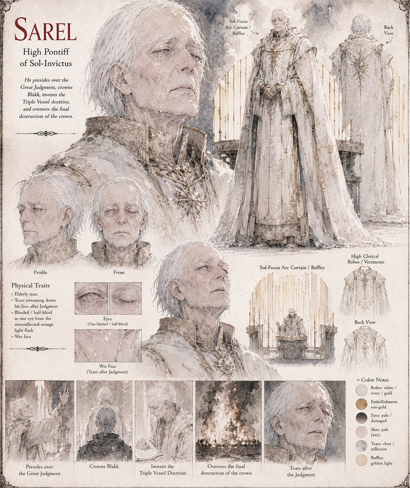

Sarel
High Pontiff of Sol-Invictus
High Pontiff of Sol-Invictus, and the one man in Illumaria whose private eleven years of doubting the Decree of Luminescence leave him its sole living arbiter the moment Aethelgard dies. He presides over the Great Judgment, draws the final baffle from the Sol-Focus Arc himself, and takes the returning beam directly in one eye when Blakk's cone reflects it back along its own line of arrival — cracking a lens no Pontiff after him is ever permitted to have repaired, and leaving him in tears he cannot stop for the rest of that day.
He invents the Triple Vessel doctrine once two further cones are recovered from the same ditch, crowns Blakk a second time as High Sovereign, and spends four decades keeping the vessels' true fragility a secret paid for in gold and silence. He talks Petrin out of confessing the fraud immediately after Blakk's death, oversees the crown's final, confirming destruction by open flame, and sets down, in a testament his own successor won't find for twenty years, the one article of faith his doctrine never actually required of him.
“Let no shadow claim what shadow did not make.”
Appears in The Vessel of Unmediated Grace